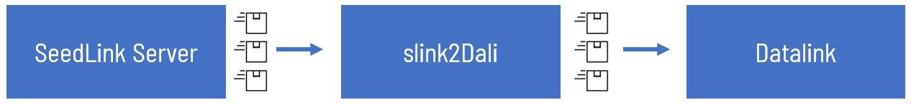

Slink2Dali¶
This documentation aims to introduce the application of slink2dali in the earthquake-hub citizen science network. See the system overview here. This is a fork of iris-edu/slink2dali See their original documentation here.
Background¶
MiniSeed and Datalink packets are two of the many data types that are used in digitally transmitting ground motion data. A data type is simply a data format standardized to be used within a communication protocol. In this case, MiniSeed is used within the SeedLink protocol, and datalink packet within the DataLink protocol. These two protocols are specifically developed to be application-level protocols (in the context of TCP/IP), following the Server-Client model, and streams time series data in near-real time. SeedLink is designed to transmit ground motion time-series payloads, whereas DataLink is more generally designed to transmit any time series payloads.
An important distinction between the two protocols is the direction that the time-series data is streamed between the servers and clients. For SeedLink, it is a one-way stream from the server to the client. That is, the client initiates connection, requests a specific stream, and receives real-time or archived data stream. On the other hand, DataLink can facilitate streaming of data from either direction: client to server, or server to client. That means, after initiating a connection, a client can negotiate a stream it wants, and either receive that data stream or send that data stream (given that it has a source of data).
In citizen science application, this means that the DataLink protocol allows for citizen scientists to send data to a central server. This isn’t possible using SeedLink alone since a seedlink client (in this case the citizen scientists) can only receive data from a server and not send it to a server.
What It Does¶
What slink2dali does is serve as the middleman between a seedlink and a datalink server. Specifically, it will receive a packet from a seedlink server, package that miniseed as a payload within a datalink packet, and finally send it over to a datalink server. It will do this packaging and forwarding for every packet sent by the seedlink server.
.
This is important since most ground motion micro-computers (such as raspberryshake devices), come with an internal SeedLink server. Meaning instead of only being able to read data from this device’s SeedLink server, we can use slink2dali to extend the functionality of such a device by also making it able to send its real-time data to some remote DataLink server.
Changes¶
2. Response Codes¶
Another addition is the use of response codes in dl_authorize() and dl_write(). This is done so as to allow additional actions based on what the datalink server has responded. Whereas before, a datalink server immediately disconnects a client whenever an error has been encountered, and slink2dali in that case will infinitely retry to reconnect, the addition of response codes allows other actions to be taken. In this case, we added the dropping of packets without disconnecting the client. This feature is useful in our application, specifically: 1. Intentional dropping of packets by the server without disconnecting a client is a desirable feature when we allow multiple redundant connections from the same source. 2. When a client connection is authorized, but is forwarding different packets with different streamIDs, then the packets whose streamIDs aren’t included in the authorization of token should be dropped.
3. Code execution¶
Lastly, the main loop that forwards each packet has been refactored to accommodate the changes stated above. Specifically, createDLconnection() was created and sendrecord() was edited in order to expose the response code as return status of dl_authorize() and dl_write(), and make the code execution flow depend on these return status codes.
CONTRIBUTING.md¶
This is the link for CONTRIBUTING.md.